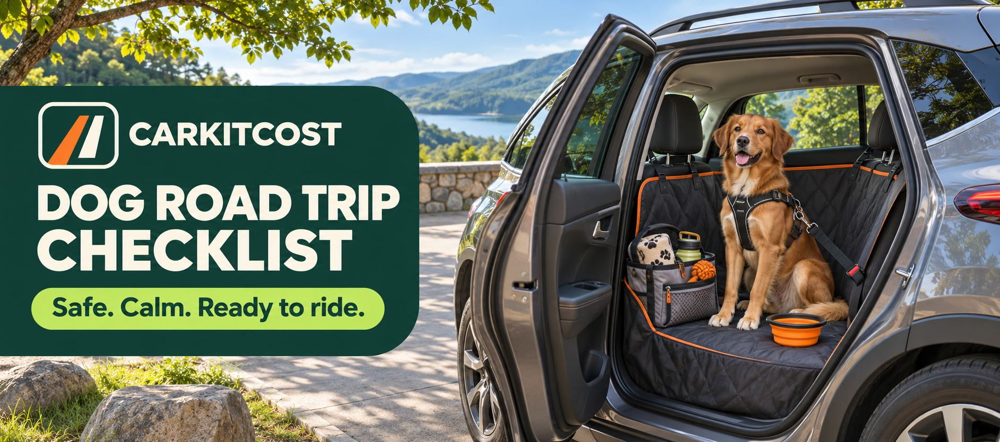
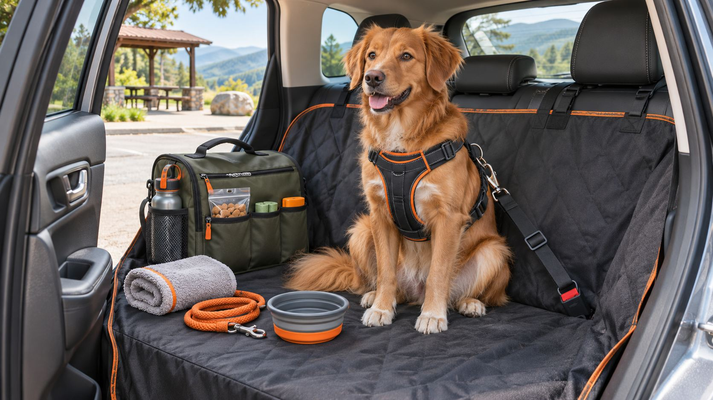

Set up your car for a road trip with your dog.
Where your dog rides, how it is restrained and what stays within reach matter more than any single product. This checklist covers the setup, the gear and the stops.

1. Decide where your dog rides
Start with restraint, because everything else depends on it. A loose dog can distract the driver and can be thrown in a sudden stop.
- Use a crash-tested harness clipped into the seat belt system, or a crate or carrier anchored so it cannot slide or tip.
- Put the dog in the back seat or the cargo area, not the front seat, where an airbag can cause injury.
- Secure a small dog's carrier to a rear seat with the seat belt.
- In an SUV, a crate or a barrier keeps a large dog in the cargo area. Make sure the dog has airflow.
- Never let a dog ride loose in an open truck bed.
Some places have laws about restraining pets in vehicles, so check the rules along your route.

2. Protect the car
A hammock-style seat cover catches hair, mud and drool, and it stops the dog from slipping into the footwell. In an SUV, a waterproof cargo liner does the same job. Keep a towel in the cabin for wet paws and rainy days, and use the child lock on the windows so the dog cannot open them.
3. Plan water, food and breaks
- Stop roughly every two to three hours so the dog can walk, relieve itself and drink.
- Offer water at every stop from a spill-resistant bowl.
- Feed a light meal a few hours before you leave, and skip large meals right before driving.
- If your dog gets carsick or anxious in the car, ask your vet about options before the trip.
4. Keep the dog kit within reach
Everything the dog needs on the road should sit in one bag in the cabin, not underneath the luggage.
Dog kit
- Leash, plus a spare
- Collar with an ID tag showing a current phone number
- Waste bags
- Water and a travel bowl
- Food and treats
- Towel and paw wipes
- Any medication
- Vaccination records
- A recent photo of your dog on your phone
- A familiar blanket or toy
- A pet first-aid kit
5. Handle heat and cold
Never leave a dog in a parked car. The interior heats quickly, even on a mild day and even with the windows cracked. Cold weather carries its own risks, so a dog should not be left in a car in freezing temperatures either. Plan stops where someone can stay with the dog, and use window shades and air conditioning on hot days.
6. Make the car calm
If your dog is not used to riding, take a few short trips before the big one. Bring a familiar blanket, keep the cabin at a comfortable temperature and avoid letting the dog hang its head out of the window, where debris can hit its eyes.
7. Plan the route and the stay
- Check pet policies and fees at hotels, rentals and campgrounds before you book.
- Look up an emergency vet near your route and save the number in your phone.
- Make sure the microchip registration and the ID tag have your current contact details.
Match the setup to the trip
Gear worth having
Three items solve the most common problems on a dog road trip. You may already own some, so mark them as covered in the planner.
Frequently asked questions
Is it safe for my dog to ride in the front seat?
It is safer in the back seat or the cargo area. A front airbag can injure a dog, and a dog in the front can get in the way of the driver. A small dog is best in a carrier that is secured to a rear seat with the seat belt.
How often should I stop on a long drive?
Plan a stop roughly every two to three hours. Let the dog walk, relieve itself and drink. Some dogs need stops more often, especially puppies, seniors and dogs that get carsick.
Can I leave my dog in the car for a quick stop?
No. A parked car heats up quickly, even on a mild day and even with the windows cracked. Plan stops where someone can stay with the dog, or use drive-throughs and outdoor seating.
Is a crate or a harness better?
Either works when it is secured properly. A crash-tested harness clipped into the seat belt system suits a dog that rides on a seat. A crate suits a dog that settles in one, and it needs to be anchored so it cannot slide or tip in a sudden stop. Choose the one your dog accepts and that stays put.
Build a setup with your dog in mind
The planner opens with pet gear included. Choose your vehicle, trip length and who is coming.
Related: the long road trip setup guide, the trunk organization guide and the cross-country drive guide. As an Amazon Associate, CarKitCost may earn from qualifying purchases. Product links are selected for usefulness and trip fit, not placement fees.